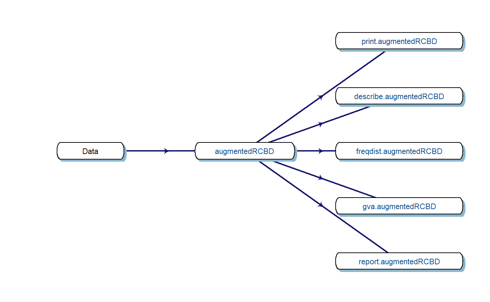

Data Analysis with augmentedRCBD
Aravind, J.1, Mukesh Sankar, S.2, Wankhede, D. P.3, and Kaur, V.4
2019-01-17
Source:vignettes/Data_Analysis_with_augmentedRCBD.Rmd
Data_Analysis_with_augmentedRCBD.Rmd
- Division of Germplasm Conservation, ICAR-National Bureau of Plant Genetic Resources, New Delhi.
- Division of Genetics, ICAR-Indian Agricultural Research Institute, New Delhi.
- Division of Genomic Resources, ICAR-National Bureau of Plant Genetic Resources, New Delhi.
- Division of Germplasm Evaluation, ICAR-National Bureau of Plant Genetic Resources, New Delhi.

1 Overview
The software augmentedRCBD is built on the R statistical programming language as an add-on (or ‘package’ in the R lingua franca). It performs the analysis of data generated from experiments in augmented randomised complete block design according to Federer, W.T. (1956, 1961). It also computes analysis of variance, adjusted means, descriptive statistics, genetic variability statistics etc. and includes options for data visualization and report generation.
This tutorial aims to educate the users in utilising this package for performing such analysis. Utilising augmentedRCBD for data analysis requires a basic knowledge of R programming language. However, as many of the intended end-users may not be familiar with R, sections 2 to 4 give a ‘gentle’ introduction to R, especially those aspects which are necessary to get augmentedRCBD up and running for performing data analysis in a Windows environment. Users already familiar with R can feel free to skip to section 5.

2 R software
It is a free software environment for statistical computing and graphics. It is free and open source, platform independent (works on Linux, Windows or MacOS), very flexible, comprehensive with robust interfaces for all the popular programming languates as well as databases. It is strengthened by its diverse library of add-on packages extending its ability as well as the incredible community support. It is one of the most popular tools being used in academia today (Tippmann, 2015).
3 Getting Started
This section details the steps required to set up the R programming environment under a third-party interface called RStudio in Windows.
3.1 Installing R
Download and install R for Windows from http://cran.r-project.org/bin/windows/base/.

Fig. 1: The R download location.
3.2 Installing RStudio
The basic command line interface in native R is rather limiting. There are several interfaces which enhance it’s functionality and ease of use, RStudio being one of the most popular among R programmers.
Download and install RStudio for Windows from https://www.rstudio.com/products/rstudio/download/#download

Fig. 2: The RStudio download location.
3.3 The RStudio Interface
On opening RStudio, the default interface with four panes/windows is visible as follows. Few panes have different tabs.

Fig. 3: The default RStudio interface with the four panes.
3.3.1 Console
This is where the action happens. Here any authentic R code typed after the ‘>’ prompt will be executed after pressing ‘Enter’ to generate the output.
For example, type 1+1 in the console and press ‘Enter’.
[1] 23.3.2 Source
This is where R Scripts (collection of code) can be created and edited. R scripts are text files with a .R extension. R Code for analysis can be typed and saved in such R scripts. New scripts can be opened by clicking ‘File|New File’ and selecting ‘R Script’. Code can be selected from R Scripts and sent to console for evaluation by clicking ‘Run’ on the ‘Source’ pane or by pressing ‘Ctrl + Enter’.
3.3.3 Environment|History|Connections
The ‘Environment’ tab shows the list of all the ‘objects’ (see section 4.3) defined in the current R session. It has also some buttons up top to open, save and clear the environment as well as few options for import of data under Import Dataset.
The ‘History’ tab shows a history of all the code that was previously evaluated. This is useful, if you want to go back to some code.
The ‘Connections’ tab helps to establish and manage connections with different databases and data sources.
3.3.4 Files|Plots|Packages|Help|Viewer
The ‘Files’ tab shows a sleek file browser to access the file directory in the computer with options to manage the working directory (see section 4.1) under the More button.
The ‘Plots’ tab shows all the plots generated in R with buttons to delete unnecessary ones and export useful ones as a pdf file or as an image file.
The ‘Packages’ tab shows a list of all the R add-on packages installed. The check box on the left shows whether they are loaded or not. There are also buttons to install and update R packages.
The ‘Viewer’ tab shows any web content output generated by an R code.
4 Some Basics
This section describes some basics to enable the users to have a working knowledge in R in order to use augmentedRCBD.
4.1 Working Directory
It is a file path to a folder on the computer which is recognised by R as the default location to read files from or write files to. The code getwd() shows the current working directory, while setwd() can be used to change the existing working directory.
[1] "C:/Users/Computer/Documents"[1] "C:/Data Analysis/"One key detail is that file paths in R uses forward slashes (/) as in MacOS or Linux, unlike backward slashes (\) in Windows. This needs to be considered while copying paths from default Windows file explorer.
4.2 Expression and Assignment
Expressions are instructions in the form of code to be entered after the > prompt in the console. Expressions can be a constant, an arithmetic or a condition. A more advanced and most useful expression is a function call (see section 4.3).
[1] 123[1] 3[1] TRUE[1] FALSE[1] 51.25Information from an expression can be stored as an ‘object’ (see section 4.3) by assigning a name using the operator ‘<-’.
[1] 3It is recommended to add comments to explain the code by using the ‘#’ sign. Any code after the ‘#’ sign will be ignored by R.
4.3 Objects and Functions
R is an object-oriented programming language (OOP). Any kind or construct created in R is an ‘object’. Each object has a ‘class’ (shown using the class() function) and different ‘attributes’ which defines what operations can be done on that object. There are different types of data structure objects in R such as vectors, matrices, factors, data frames, and lists. A ‘function’ is also an object, which defines a procedure or a sequence of expressions.
4.3.1 Vector
A vector is a collection of elements of a single type (or ‘mode’). The common vector modes are ‘numeric’, ‘integer’, ‘character’ and ‘logical’. The c() function is used to create vectors. The functions class(), str() and length() show the attributes of vectors.
Vector modes ‘numeric’ stores real numbers, while ‘integer’ stores integers, which can be enforced by suffixing elements with ‘L’.
[1] "numeric" num [1:3] 1 2 3.3[1] 3[1] "integer" int [1:3] 1 2 3[1] 3The vector mode ‘character’ store text.
[1] "character" chr [1:3] "one" "two" "three"[1] 3The vector mode ‘logical’ stores ‘TRUE’ OR ‘FALSE’ logical data.
[1] "logical" logi [1:6] TRUE TRUE TRUE FALSE TRUE FALSE[1] 64.3.2 Factor
A ‘factor’ in R stores data from categorical data in variables as different levels.
[1] "male" "female" "female" "male" "male" [1] FALSE[1] male female female male male
Levels: female male[1] TRUE[1] "factor" Factor w/ 2 levels "female","male": 2 1 1 2 2A character, numeric or integer vector can be transformed to a factor by using the as.factor() function.
[1] "numeric" num [1:3] 1 2 3.3[1] "factor" Factor w/ 3 levels "1","2","3.3": 1 2 3[1] "integer" int [1:3] 1 2 3[1] "factor" Factor w/ 3 levels "1","2","3": 1 2 3[1] "character" chr [1:3] "one" "two" "three"[1] "factor" Factor w/ 3 levels "one","three",..: 1 3 24.3.3 Matrix
A ‘matrix’ in R is a vector with the attributes ‘nrow’ and ‘ncol’.
[,1] [,2] [,3] [,4]
[1,] 1 6 11 16
[2,] 2 7 12 17
[3,] 3 8 13 18
[4,] 4 9 14 19
[5,] 5 10 15 20[1] "matrix"[1] "integer"[1] 5 44.3.4 List
A ‘list’ is a containter containing different objects. The contents of list need not be of the same type or mode. A list can encompass a mixture of data types such as vectors, matrices, data frames, other lists or any other data structure.
[1] "list"List of 4
$ : num [1:3] 1 2 3.3
$ : int [1:5, 1:4] 1 2 3 4 5 6 7 8 9 10 ...
$ : logi [1:6] TRUE TRUE TRUE FALSE TRUE FALSE
$ :List of 2
..$ : int [1:3] 1 2 3
..$ : chr [1:3] "one" "two" "three"4.3.5 Data Frame
A ‘data frame’ in R is a special kind of list with every element having equal length. It is very important for handling tabular data in R. It is a array like structure with rows and columns. Each column needs to be of a single data type, however data type can vary between columns.
L <- LETTERS[1:4]
y <- 1:4
z <- c("This", "is", "a", "data frame")
df <- data.frame(L, x = 1, y, z)
df L x y z
1 A 1 1 This
2 B 1 2 is
3 C 1 3 a
4 D 1 4 data frame'data.frame': 4 obs. of 4 variables:
$ L: Factor w/ 4 levels "A","B","C","D": 1 2 3 4
$ x: num 1 1 1 1
$ y: int 1 2 3 4
$ z: Factor w/ 4 levels "a","data frame",..: 4 3 1 2$names
[1] "L" "x" "y" "z"
$class
[1] "data.frame"
$row.names
[1] 1 2 3 4[1] "1" "2" "3" "4"[1] "L" "x" "y" "z"4.3.6 Functions
All of the work in R is done by functions. It is an object defining a procedure which takes one or more objects as input (or ‘arguments’), performs some action on them and finally gives a new object as output (or ‘return’). class(), mean(), getwd(), +, etc. are all functions.
For example the function mean() takes a numeric vector as argument and returns the mean as a numeric vector.
[1] 2.1The user can also create custom functions. For example the function foo adds two numbers and gives the result.
[1] 54.4 Special Elements
In addition to numbers and text, there are some special elements which can be included in different data objects.
NA (not available) indicates missing data.
[1] FALSE TRUE FALSE[1] FALSE TRUE FALSE FALSE FALSE[1] TRUE[1] 1.0 2.0 3.3[1] FALSE FALSE FALSEInf indicates infinity.
[1] InfNaN (Not a Number) indicates any undefined value.
[1] NaN4.5 Indexing
The [ function is used to extract elements of an object by indexing (numeric or logical). Named elements in lists and data frames can be extracted by using the $ operator.
Consider a vector a.
[1] 1[1] 2.0 3.3[1] 3.3 6.7Consider a matrix m.
a b c
[1,] 1 2 3
[2,] 4 5 6
[3,] 7 8 9[1] 2 5 8a b c
7 8 9 a b c
[1,] 4 5 6
[2,] 7 8 9b
5 [1] 2 5 8 a c
[1,] 1 3
[2,] 4 6
[3,] 7 9Consider a list w.
w <- list(vec = a, mat = m, data = df, alist = list(b, c))
# Indexing by number
w[2] # As list structure$mat
a b c
[1,] 1 2 3
[2,] 4 5 6
[3,] 7 8 9 a b c
[1,] 1 2 3
[2,] 4 5 6
[3,] 7 8 9[1] 1.0 2.0 3.3 2.8 6.7 L x y z
1 A 1 1 This
2 B 1 2 is
3 C 1 3 a
4 D 1 4 data frameConsider a data frame df.
L x y z
1 A 1 1 This
2 B 1 2 is
3 C 1 3 a
4 D 1 4 data frame[1] 1 1 1 1 x
1 1
2 1
3 1
4 1 L x y z
3 C 1 3 a L x y
2 B 1 2
3 C 1 3[1] 1[1] A B C D
Levels: A B C D[1] This is a data frame
Levels: a data frame is This4.6 Help Documentation
The help documentation regarding any function can be viewed using the ? or help() function. The help documentation shows the default usage of the function including, the arguments that are taken by the function and the type of output object returned (‘Value’).
4.7 Packages
Packages in R are collections of R functions, data, and compiled code in a well-defined format. They are add-ons which extend the functionality of R and at present, there are 13646 packages available for deployment and use at the official repository, the Comprehensive R Archive Network (CRAN).
Valid packages from CRAN can be installed by using the install.packages() command.
Installed packages can be loaded using the function library().
4.8 Importing and Exporting Tabular Data
Tabular data from a spreadsheet can be imported into R in different ways. Consider some data such as in Table 1. Copy this data in to a spreadsheet editor such as MS Excel and save it as augdata.csv, a comma-separated-value file and augdata.xlsx, an Excel file in the working directory (getwd()).
Table 1: Example data from an experiment in augmented RCBD design.
| blk | trt | y1 | y2 |
|---|---|---|---|
| I | 1 | 92 | 258 |
| I | 2 | 79 | 224 |
| I | 3 | 87 | 238 |
| I | 4 | 81 | 278 |
| I | 7 | 96 | 347 |
| I | 11 | 89 | 300 |
| I | 12 | 82 | 289 |
| II | 1 | 79 | 260 |
| II | 2 | 81 | 220 |
| II | 3 | 81 | 237 |
| II | 4 | 91 | 227 |
| II | 5 | 79 | 281 |
| II | 9 | 78 | 311 |
| III | 1 | 83 | 250 |
| III | 2 | 77 | 240 |
| III | 3 | 78 | 268 |
| III | 4 | 78 | 287 |
| III | 8 | 70 | 226 |
| III | 6 | 75 | 395 |
| III | 10 | 74 | 450 |
The augdata.csv file can be imported into R using the read.csv() function or the read_csv() function in the readr package.
'data.frame': 20 obs. of 4 variables:
$ blk: Factor w/ 3 levels "I","II","III": 1 1 1 1 1 1 1 2 2 2 ...
$ trt: num 1 2 3 4 7 11 12 1 2 3 ...
$ y1 : num 92 79 87 81 96 89 82 79 81 81 ...
$ y2 : num 258 224 238 278 347 300 289 260 220 237 ...The argument stringsAsFactors = FALSE reads the text columns as of type character instead of the default factor.
'data.frame': 20 obs. of 4 variables:
$ blk: chr "I" "I" "I" "I" ...
$ trt: num 1 2 3 4 7 11 12 1 2 3 ...
$ y1 : num 92 79 87 81 96 89 82 79 81 81 ...
$ y2 : num 258 224 238 278 347 300 289 260 220 237 ...The augdata.xlsx file can be imported into R using the read_excel() function in the readxl package.
'data.frame': 20 obs. of 4 variables:
$ blk: chr "I" "I" "I" "I" ...
$ trt: num 1 2 3 4 7 11 12 1 2 3 ...
$ y1 : num 92 79 87 81 96 89 82 79 81 81 ...
$ y2 : num 258 224 238 278 347 300 289 260 220 237 ...The tabular data can be exported from R to a .csv (comma-separated-value) file by the write.csv() function.
4.9 Additional Resources
To learn more about R, there are upteen number of online tutorials as well as free courses availble. Queries about various aspects can be put to the active and vibrant `R community online.
- Online tutorials
- Free online courses
-
Rcommunity support- http://stackoverflow.com/
-
Rhelp mailing lists : http://www.r-project.org/mail.html
5 Installation of augmentedRCBD
The package augmentedRCBD can be installed using the following functions:
# Install from CRAN
install.packages('augmentedRCBD', dependencies=TRUE)
# Install development version from Github
library(devtools)
install_github("aravind-j/augmentedRCBD")The stable release is hosted in CRAN (see section 4.7), while the under-development version is hosted as a Github repository. To install from github, you need to use the install_github() function from `devtools package.
6 Data Format
Certain details need to be considered for arranging experimental data for analysis using the augmentedRCBD package.
The data should be in long/vertical form, where each row has the data from one genotype per block. For example, consider the following data (Table 2) recorded for a trait from an experiment laid out in an augmented block design with 3 blocks and 12 genotypes(or treatment) with 6 to 7 genotypes/block. 8 genotypes (Test, G 5 to G 12) are not replicated, while 4 genotypes (Check, G 1 to G 4) are replicated.
Table 2: Data from an experiment in augmented RCBD design.
| Block I | G12 | G4 | G11 | G2 | G1 | G7 | G3 |
| 82 | 81 | 89 | 79 | 92 | 96 | 87 | |
| Block II | G5 | G9 | – | G3 | G1 | G2 | G4 |
| 79 | 78 | – | 81 | 79 | 81 | 91 | |
| Block III | G4 | G2 | G1 | G6 | G10 | G3 | G8 |
| 78 | 77 | 83 | 75 | 74 | 78 | 70 |
This data needs to be arranged with columns showing block, genotype (or treatment) and the data of the trait for each genotype per block (Table 3).
Table 3: Data from an experiment in augmented RCBD design arranged in long-form.
| Block | Treatment | Trait |
|---|---|---|
| Block I | G 1 | 92 |
| Block I | G 2 | 79 |
| Block I | G 3 | 87 |
| Block I | G 4 | 81 |
| Block I | G 7 | 96 |
| Block I | G 11 | 89 |
| Block I | G 12 | 82 |
| Block II | G 1 | 79 |
| Block II | G 2 | 81 |
| Block II | G 3 | 81 |
| Block II | G 4 | 91 |
| Block II | G 5 | 79 |
| Block II | G 9 | 78 |
| Block III | G 1 | 83 |
| Block III | G 2 | 77 |
| Block III | G 3 | 78 |
| Block III | G 4 | 78 |
| Block III | G 8 | 70 |
| Block III | G 6 | 75 |
| Block III | G 10 | 74 |
The data for block and genotype (or treatment) can also be depicted as numbers (Table 4).
Table 4: Data from an experiment in augmented RCBD design arranged in long-form (Block and Treatment as numbers).
| Block | Treatment | Trait |
|---|---|---|
| 1 | 1 | 92 |
| 1 | 2 | 79 |
| 1 | 3 | 87 |
| 1 | 4 | 81 |
| 1 | 7 | 96 |
| 1 | 11 | 89 |
| 1 | 12 | 82 |
| 2 | 1 | 79 |
| 2 | 2 | 81 |
| 2 | 3 | 81 |
| 2 | 4 | 91 |
| 2 | 5 | 79 |
| 2 | 9 | 78 |
| 3 | 1 | 83 |
| 3 | 2 | 77 |
| 3 | 3 | 78 |
| 3 | 4 | 78 |
| 3 | 8 | 70 |
| 3 | 6 | 75 |
| 3 | 10 | 74 |
Multiple traits can be added as additional columns (Table 5).
Table 5: Data from an experiment in augmented RCBD design arranged in long-form (Multiple traits).
| Block | Treatment | Trait1 | Trait2 |
|---|---|---|---|
| Block I | G 1 | 92 | 258 |
| Block I | G 2 | 79 | 224 |
| Block I | G 3 | 87 | 238 |
| Block I | G 4 | 81 | 278 |
| Block I | G 7 | 96 | 347 |
| Block I | G 11 | 89 | 300 |
| Block I | G 12 | 82 | 289 |
| Block II | G 1 | 79 | 260 |
| Block II | G 2 | 81 | 220 |
| Block II | G 3 | 81 | 237 |
| Block II | G 4 | 91 | 227 |
| Block II | G 5 | 79 | 281 |
| Block II | G 9 | 78 | 311 |
| Block III | G 1 | 83 | 250 |
| Block III | G 2 | 77 | 240 |
| Block III | G 3 | 78 | 268 |
| Block III | G 4 | 78 | 287 |
| Block III | G 8 | 70 | 226 |
| Block III | G 6 | 75 | 395 |
| Block III | G 10 | 74 | 450 |
Data should preferably be balanced i.e. all the check genotypes should be present in all the blocks. If not, a warning is issued. The number of test genotypes can vary within a block. There should not be any missing values. Rows of genotypes with missing values for one or more traits should be removed.
Such a tabular data should be imported see section 7.8 into R as a data frame object see section 4.3.5. The columns with the block and treatment categorical data should of the type factor see section 4.3.2, while the column(s) with the trait data should be of the type integer or numeric see section 4.3.1.
Consider the example data in Table 1 in section 4.8. It can be imported as instructed.
7 Data Analysis for a Single Trait
Check genotypes are inferred by default on the basis of number of replications. However, if some test genotypes are also replicated, they may also be falsely detected as checks.
Fig. 4. Workflow for analysis of single traits with augmentedRCBD.
8 Data Analysis for a Multiple Traits

Fig. 5. Workflow for analysis of multiple traits with augmentedRCBD.
Then the package can be loaded using the function
Registered S3 methods overwritten by 'ggplot2':
method from
[.quosures rlang
c.quosures rlang
print.quosures rlangRegistered S3 method overwritten by 'dplyr':
method from
as.data.frame.tbl_df tibble
--------------------------------------------------------------------------------
Welcome to augmentedRCBD version 0.1.0.9000
# To know how to use this package type:
browseVignettes(package = 'augmentedRCBD')
for the package vignette.
# To know whats new in this version type:
news(package='augmentedRCBD')
for the NEWS file.
# To cite the methods in the package type:
citation(package='augmentedRCBD')
# To suppress this message use:
suppressPackageStartupMessages(library(augmentedRCBD))
--------------------------------------------------------------------------------
9 Citing augmentedRCBD
To cite the R package 'augmentedRCBD' in publications use:
Aravind, J., Mukesh Sankar, S., Wankhede, D. P., and Kaur, V.
(2019). augmentedRCBD: Analysis of Augmented Randomised
Complete Block Designs. R package version 0.1.0.9000,
https://aravind-j.github.io/augmentedRCBD/https://cran.r-project.org/package=augmentedRCBD.
A BibTeX entry for LaTeX users is
@Manual{,
title = {augmentedRCBD: Analysis of Augmented Randomised Complete Block Designs},
author = {J. Aravind and S. {Mukesh Sankar} and Dhammaprakash Pandhari Wankhede and Vikender Kaur},
year = {2019},
note = {R package version 0.1.0.9000},
note = {https://aravind-j.github.io/augmentedRCBD/},
note = {https://cran.r-project.org/package=augmentedRCBD},
}
This free and open-source software implements academic research by
the authors and co-workers. If you use it, please support the
project by citing the package.10 Session Info
R Under development (unstable) (2018-10-21 r75476)
Platform: i386-w64-mingw32/i386 (32-bit)
Running under: Windows 7 (build 7601) Service Pack 1
Matrix products: default
locale:
[1] LC_COLLATE=English_India.1252 LC_CTYPE=English_India.1252
[3] LC_MONETARY=English_India.1252 LC_NUMERIC=C
[5] LC_TIME=English_India.1252
attached base packages:
[1] stats graphics grDevices utils datasets methods base
other attached packages:
[1] augmentedRCBD_0.1.0.9000 diagram_1.6.4
[3] shape_1.4.4
loaded via a namespace (and not attached):
[1] bibtex_0.4.2 reshape2_1.4.3 rstudioapi_0.8.0.9000
[4] magrittr_1.5 TH.data_1.0-9 estimability_1.3
[7] gtable_0.2.0 rmarkdown_1.10 fs_1.2.6
[10] memoise_1.1.0 base64enc_0.1-3 xml2_1.2.0
[13] pillar_1.3.0 htmltools_0.3.6 stringr_1.3.1
[16] splines_3.6.0 dplyr_0.7.7 moments_0.14
[19] lattice_0.20-35 survival_2.42-6 desc_1.2.0
[22] tidyselect_0.2.5 plyr_1.8.4 sandwich_2.5-0
[25] emmeans_1.2.4 zoo_1.8-4 uuid_0.1-2
[28] commonmark_1.6 knitr_1.20 gbRd_0.4-11
[31] pkgconfig_2.0.2 Matrix_1.2-14 R6_2.3.0
[34] digest_0.6.18 colorspace_1.3-2 bindrcpp_0.2.2
[37] rprojroot_1.3-2 stringi_1.2.4 yaml_2.2.0
[40] lazyeval_0.2.1 codetools_0.2-15 evaluate_0.12
[43] officer_0.3.2 tibble_1.4.2 compiler_3.6.0
[46] gdtools_0.1.7 bindr_0.1.1 multcompView_0.1-7
[49] backports_1.1.2 xtable_1.8-3 Rdpack_0.10-3
[52] munsell_0.5.0 roxygen2_6.1.1 Rcpp_1.0.0
[55] highr_0.7 coda_0.19-2 MASS_7.3-51
[58] assertthat_0.2.0 pkgdown_1.1.0 ggplot2_3.0.0
[61] tools_3.6.0 mvtnorm_1.0-8 zip_1.0.0
[64] scales_1.0.0 crayon_1.3.4 glue_1.3.0
[67] purrr_0.2.5 flextable_0.4.5 rlang_0.3.0.1
[70] multcomp_1.4-8 grid_3.6.0 References
Federer, W. T. (1956). Augmented (or hoonuiaku) designs. The Hawaiian Planters’ Record LV(2), 191–208.
Federer, W. T. (1961). Augmented designs with one-way elimination of heterogeneity. Biometrics 17, 447–473. doi:10.2307/2527837.
Tippmann, S. (2015). Programming tools: Adventures with R. Nature News 517, 109. doi:10.1038/517109a.